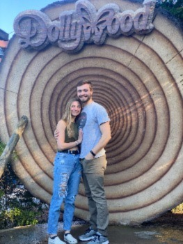
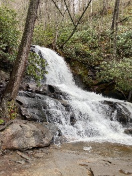

Day 1
Tyler and I arrived in Tennessee around 3pm after an 8 hour drive. I drove the entire way there. It really wasn't so bad. When we got there we first ate Barbeque at this place. It was pretty decent food. Then, we drove around Gatlinburg. There was so much tourist stuff. It looked just like you were at the beach with all the stuff to do. We went for some mini golf that evening outdoors. It was a super dumb course but the decorations were interesting. We headed back to our Airbnb where there was a really sweet looking dog. We didn't encounter the people that lived there.

Mini Golfing!
Day 2
We woke up ready to tackle the day. We hit breakfast at an amazing place called ""?. Today, we went to Dollywood. Dolly Parton's famous amusement park. We got there as soon as it opened. This was the second day it had opened for the season. We were able to ride the first ride with about a 10 minute wait. After that, the wait times were the worst I have ever encountered in my life. There were 7 main rollercoasters and we rode probably only 3 in the 8 hours we were there. We rode a ride that took you through a mountain. That drop made my stomach hurt. I was a little bit afraid to ride another one so then I decided we should wait in line for the swings, which was a mistake. We waited in line for the dumbest rollercoaster for probably 2 hours after that. We played a charades game while we waited in line. We waited in line for the famous cinnamon bread for an hour but that was totally worth it. That was our lunch. After Dollywood, we went shopping?
Day 3
We went to great smoky mountiant nations lparkTdddddddddddddddddddddddddddddddddddddddddddddddddddddddddddddddddddddddddddddddddddddddddddddddddddddddddddddddddddddddddddddddddddddddddddddddddddddddddddddddddddddddddddddddddddddddddddddddddddddddddddddddddddddddddddddddddddddddddddddddddddddddddddddddddddddddddddddddddddddddddddddddddddddddddddddddddddddddddddddddddddddddddddddddddddddddddddddddddddddddd

Day 4
wow we did more hiking jdkl hjflkah fljdlfj ;j fd
Day 5
We went home.